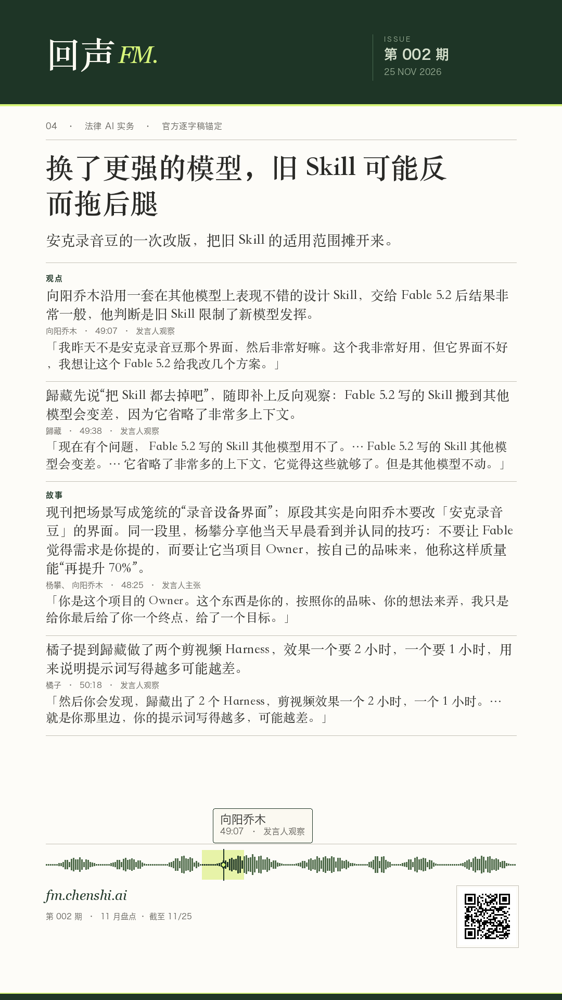

04第 002 期法律 AI 实务11.16官方逐字稿锚定
换了更强的模型，旧 Skill 可能反而拖后腿
安克录音豆的一次改版，把旧 Skill 的适用范围摊开来。
观点
向阳乔木沿用一套在其他模型上表现不错的设计 Skill，交给 Fable 5.2 后结果非常一般，他判断是旧 Skill 限制了新模型发挥。
「我昨天不是安克录音豆那个界面，然后非常好嘛。这个我非常好用，但它界面不好，我想让这个 Fable 5.2 给我改几个方案。然后我用原来那个 Skill 在其他模型里运行都还挺好的。那交给 5.2 以后，出来以后非常一般。我感觉这个就是我原来的 Skill 限制了它的发挥。」
个人试用，没有跨模型对照实验。
歸藏先说“把 Skill 都去掉吧”，随即补上反向观察：Fable 5.2 写的 Skill 搬到其他模型会变差，因为它省略了非常多上下文。
「现在有个问题， Fable 5.2 写的 Skill 其他模型用不了。… Fable 5.2 写的 Skill 其他模型会变差。… 它省略了非常多的上下文，它觉得这些就够了。但是其他模型不动。」
同样是试用观察。向阳乔木后来说这是“大模型之间的认知诅咒”。不能由此证明 Skill 可以一概删掉。
模型变强并不等于不再需要 Skill；Skill 仍是一种规范或菜谱，用来约束步骤，不希望模型任意发挥。杨攀把它称作 Encoded Preference。
「所以好多人说，是不是那个模型能力变强了以后，我就不需要 Skill 了？其实不是。… Skill 还是一种规范。你把它至少它是一个菜谱。你每一步想要干啥，你还是不希望它任意发挥的。」
主持讨论中的判断，不是对照实验结论。
故事
现刊把场景写成笼统的“录音设备界面”；原段其实是向阳乔木要改「安克录音豆」的界面。同一段里，杨攀分享他当天早晨看到并认同的技巧：不要让 Fable 觉得需求是你提的，而要让它当项目 Owner，按自己的品味来，他称这样质量能“再提升 70%”。
「你是这个项目的 Owner。这个东西是你的，按照你的品味、你的想法来弄，我只是给你最后给了你一个终点，给了一个目标。在这种情况下说那个质量能提升，再提升 70%。」
“再提升 70%”是杨攀转述并认同的技巧，不是对照实验数据。
橘子提到歸藏做了两个剪视频 Harness，效果一个要 2 小时，一个要 1 小时，用来说明提示词写得越多可能越差。
「然后你会发现，歸藏出了 2 个 Harness，剪视频效果一个 2 小时，一个 1 小时。… 就是你那里边，你的提示词写得越多，可能越差。」
主播口述时长，未给出对照条件和任务范围。
新鲜事实
橘子说最近所有 Harness 都在疯狂删除提示词，而且越删效果越好。杨攀和向阳乔木随之提出：新模型发布后，应该用新模型检查并压缩旧 Skill，并把这做成固定 Routine；橘子则补充，Fable 这类一年才一两次，很多国产模型发布不必每次都做。
「最近所有的 Harness 都在疯狂地删那个提示词。… 越删，效果越好。… 只是大家发现那个现象，但是没有把它做成一个固定的 Routine 来做，就是每次模型要升级以后，你要想适配好它，你就要让它自己去检查这些 Skill。」
圈内观察与建议，不是已统计的行业调查。
人物与产品
现场人物：向阳乔木、歸藏、杨攀、橘子。点名产品包括 Fable 5.2、安克录音豆，以及歸藏的剪视频 Harness。橘子还把 Skill 说成“中间态”，同时又承认它适合用来分发，避免直接甩出几千字提示词。
「不，这大家都知道， Skill 就是中间态嘛。… 因为我跟你说个几千字提示词，那不扯淡，我咋发呀？那你不如说我打成 Skill 了，你自己用嘛，是吧？」
对 Skill 功能的现场定义，不是产品文档。
节目溯源
Next Token（词元之外）· #010
本期
第 002 期 · 25 NOV 2026 · 11 月盘点 · 截至 11/25
